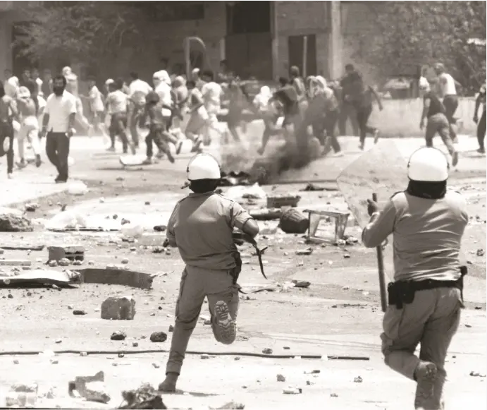
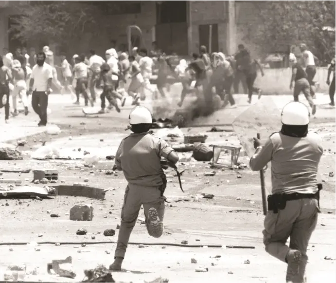
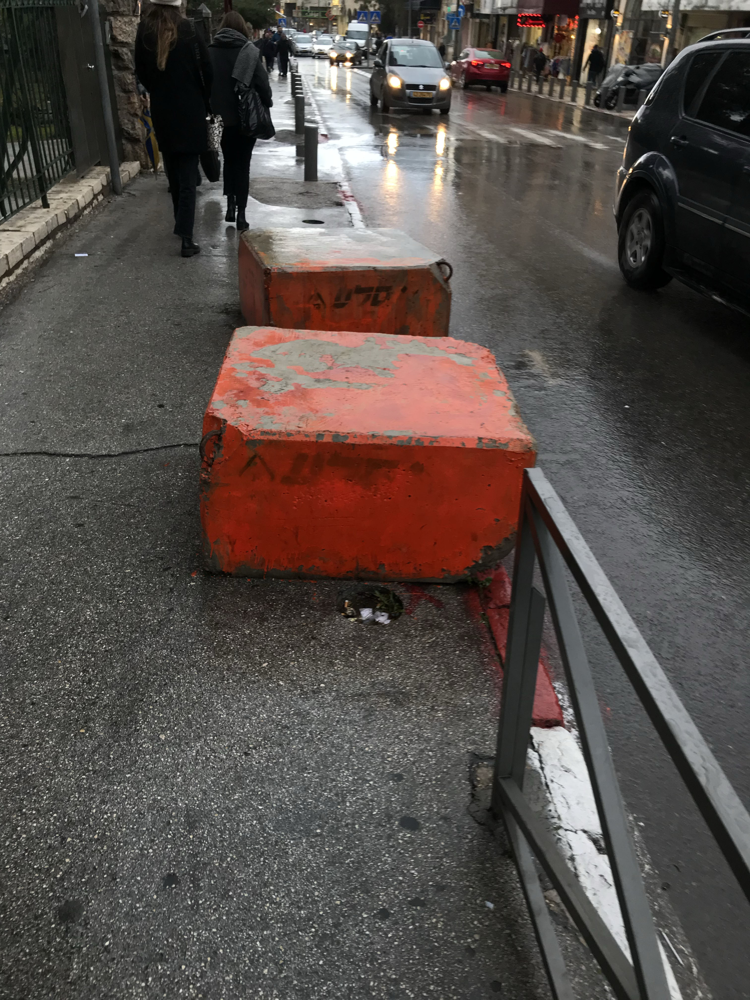
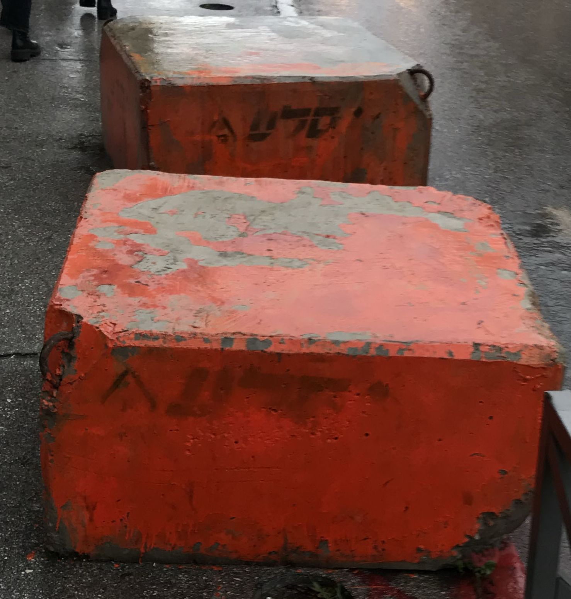
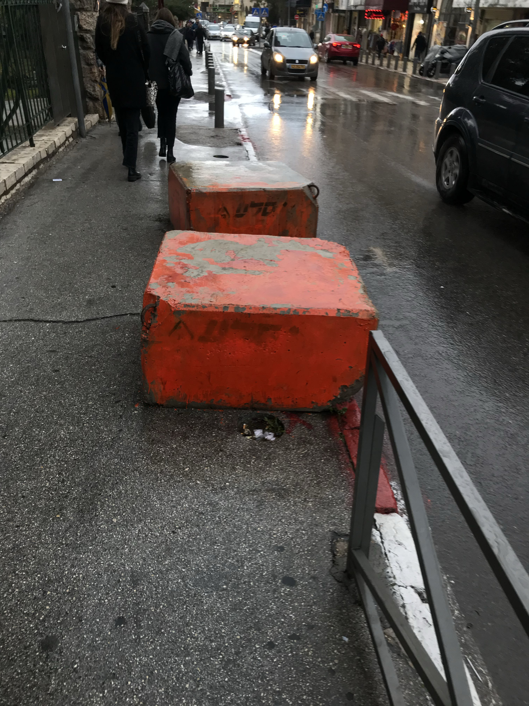
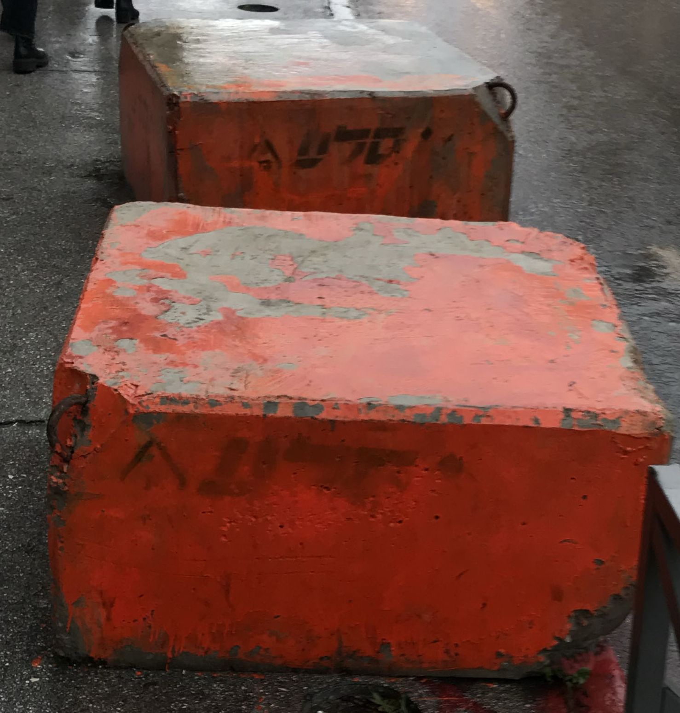

new Jerusalem. The streets of Salah AL-din and
Sultan Suleiman had their face lift from the wrinkles of past riots of the first Intifada and through the “wall keeper” operation civil unrest. Instead of images of violence, an architectural rendering stands. wooden benches, bustling streets full of vendors, retiled floors and greenery takes over.
are pinned deep into the collective mind, both to Palestinians and Israelis, that one can brush off those seemingly mundane situations/objects, as if they were as regular as breathing. But suddenly during this tour, those objects in space stopped looking mundane. Maybe because It was a tour for inspirations, maybe because it’s always a ‘hot and cold’ feeling to walk around east Jerusalem as a jewish Israeli. A magnifying glass came into action that helped focus on objects that seems to incorporate stories and meanings that the everyday life seems to abandon. Things that are truly ordinary such as coffee houses, rocks and signs, and things that are subjectively mundane to us as Israelis and Palestinians.
‘Jerusa-Park’, and yet, a reality that goes nowhere.
 

 


